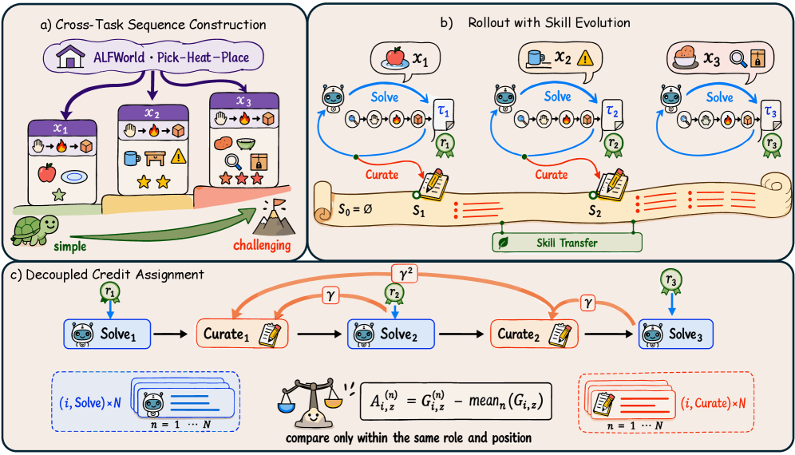
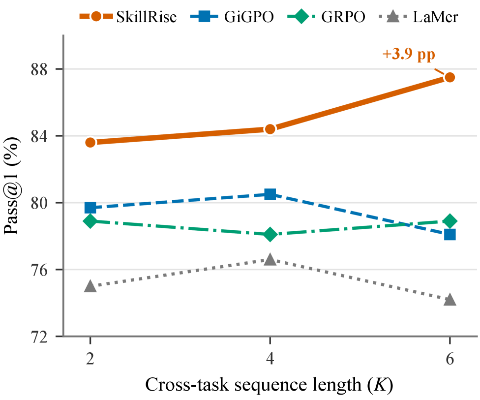

SkillRise: Cross-Task RL with an Evolving Skill Document
TL;DR
- "SkillRise: Agentic Reinforcement Learning for Cross-Task Skill Evolution" (arXiv 2607.26784, July 2026; Zhiyuan Yao, Yuxin Chen, et al. — Zhejiang U, NUS, SJTU, Meituan) trains a single policy that alternates between solving tasks and rewriting an evolving skill document, the only information carried between related tasks in a curriculum-ordered sequence.
- The trick is decoupled cross-task credit assignment: the solving phase is rewarded by the current task outcome; the curation phase is rewarded by the discounted sum of downstream task outcomes — so the RL signal directly measures whether curated skills transfer. Group-relative advantages are computed only among trials at the same sequence position and phase.
- On ALFWorld, WebShop, and ScienceWorld with Qwen3-4B, SkillRise hits 85.9 / 84.4 / 54.6 Pass@1, beating the strongest baseline (GiGPO) by 2.3 / 7.1 / 8.5 points, shows cross-task test-time scaling (83.6% at K=2 → 87.5% at K=6 on ALFWorld, one attempt per task), and matches multi-stage skill pipelines at ~1/6 of their runtime.
Why this matters
Skill learning for LLM agents is currently split between two unsatisfying poles. One pole retries the same task and summarizes previous attempts (Reflexion-style; LaMer as the trained Meta-RL version) — the resulting knowledge stays instance-specific and is never optimized for transfer. The other pole builds external skill banks with extraction, storage, retrieval, and refinement stages (SkillRL, RetroAgent) — and because downstream performance is jointly determined by all those stages, you can never attribute success or failure to skill quality. This is the same credit-assignment complaint the tracker has hit repeatedly: multi-stage scaffolds diffuse the learning signal.
SkillRise's move is to make transfer itself the training objective, with the most minimal possible machinery: no bank, no retriever, no teacher, no separate curator model. One policy, one text document, and a reward wiring that says your curation is worth exactly what it does for the next tasks. That is an end-to-end, weight-updating answer to the question that training-free systems (MSCE, HiSME in this tracker) attack with governance heuristics: how do you know a curated skill is actually good? Here the answer is: because RL priced it against future returns. For anyone building self-improving harnesses, this is one of the cleanest demonstrations yet that "learning to learn from experience" can be a trained behavior rather than a prompted one — and that the trained behavior generalizes beyond its training regime (cross-task training transfers to within-task retries).
The core idea
Standard agentic RL maximizes \(\mathcal{J}(\theta)=\mathbb{E}_{x\sim\mathcal{D},\tau\sim\pi_\theta}[R(\tau)]\) per independent episode, discarding experience. SkillRise instead samples ordered sequences \(\mathbf{x}=(x_1,\ldots,x_K)\sim\mathcal{G}\) of distinct but related instances from one task family, arranged simple-to-hard (e.g., WebShop tasks grouped by product category, ordered by number of required attributes/options). Within a sequence, a single textual skill document \(S_i\) is the sole cross-task channel. The policy solves task \(i\) conditioned on the current document, then switches roles (via a role-specific instruction, same parameters) and rewrites the document from the trajectory it just produced:
where \(\tau_i\) is the solving trajectory for task \(x_i\), \(r_i\) its verifiable outcome reward, and \(S_i\) the fully rewritten skill document (starting from \(S_0=\varnothing\)). Curation preserves useful skills, consolidates successful procedures or failure modes from \(\tau_i\), and strips instance-specific detail. Earlier trajectories are not carried forward — only the document is — so later-task performance is a clean measure of skill transferability.
The load-bearing design is the credit assignment. With \(n\) indexing the \(N\) independent trials per sequence and \(z\in\{\mathrm{solve},\mathrm{curate}\}\) the phase:
where \(\gamma\in[0,1]\) is a cross-task discount (0.6 in the experiments) that credits curation more for nearby tasks. Solving never gets sequence-level return; curation never gets current-task return. Advantages are group-relative but only within the same sequence, position, and phase:
so solving and curation returns never serve as baselines for each other, and position-dependent difficulty is normalized away. Both phases are optimized jointly with a standard PPO-style clipped objective \(\mathcal{J}(\theta)=\mathbb{E}_{n,i,z,t}\big[\min\big(\rho_{i,z,t}^{(n)}A_{i,z}^{(n)},\ \operatorname{clip}(\rho_{i,z,t}^{(n)},1-\epsilon,1+\epsilon)A_{i,z}^{(n)}\big)\big]\), with \(\rho\) the token-level importance ratio and the phase advantage applied to all tokens of that phase.
How it works

Figure 1 from the paper: (a) related instances ordered simple→challenging; (b) one policy alternates Solve/Curate, with the document as the only cross-task channel; (c) solving gets the current reward, curation gets γ-discounted downstream rewards, and advantages compare only same-role, same-position trials.
Sequence construction. Tasks are partitioned by environment-provided family metadata, then diverse instances are greedily grouped within each family and ordered by difficulty attributes. The curriculum makes early experience usable by later tasks.
Training loop:
for each batch of sequences x = (x_1..x_K) ~ G: # K=3 in training
for n = 1..N independent trials: # N=8
S_0 = empty document
for i = 1..K:
tau_i ~ pi_theta(. | x_i, S_{i-1}) # SOLVE phase
r_i = R(tau_i) # verifiable outcome
if i < K:
S_i ~ pi_theta(. | S_{i-1}, tau_i, r_i) # CURATE phase:
# keep useful skills, distill procedures/failure modes,
# drop instance-specific details (full rewrite)
# decoupled credit assignment
for each (n, i, z):
G = r_i^(n) if z == solve
G = sum_{j>i} gamma^(j-i) r_j^(n) if z == curate
# role-aware group-relative advantages (per sequence, position, phase)
A^(n)_{i,z} = G^(n)_{i,z} - mean_n G^(n)_{i,z}
# PPO-clip update over all tokens of each phase (shared parameters)
theta <- theta + grad of clipped objective
Setup. Qwen3-1.7B/4B backbones; 16 sequences per batch, K=3, N=8 (384 task plays per update, matched across all trained baselines); actor LR 1e-6, max response 1,024 tokens, up to 150 updates, γ=0.6; FSDP + vLLM on 8×H800. Evaluation: 128 held-out instances per environment, temperature 0.7.
At test time, the same mechanism runs inference-only: partition held-out tasks into related sequences, carry the document forward, and performance climbs with sequence length — a learned test-time scaling axis that is about accumulating transferable knowledge, not resampling.
Results
- Pass@1 (Qwen3-4B): 85.9% ALFWorld, 84.4% WebShop, 54.6% ScienceWorld — beating the strongest baseline GiGPO by 2.3, 7.1, and 8.5 points respectively, with prompting baselines (Zero-shot/ReAct/Reflexion), RL baselines (PPO, RLOO, GRPO, GiGPO), and Meta-RL LaMer all below.
- Within-task generalization: retrying the same held-out task while carrying the document gives the best Pass@2/Pass@3 everywhere (92.2 / 96.1 / 61.0 Pass@3), beating LaMer — which is trained on repeated attempts — by 0.8, 1.6, and 14.2 points. The curation strategy learned across tasks transfers to the within-task regime it was never trained on.
- Cross-task test-time scaling (Figure 2 below): on ALFWorld with one attempt per task, 83.6% at K=2 → 87.5% at K=6, monotonic; LaMer/GiGPO/GRPO are flat, and the margin over the best baseline widens from 3.9 to 8.6 points.

Figure 2 from the paper: Pass@1 vs. cross-task sequence length K on 128 held-out ALFWorld tasks, each attempted once.
- Model scale: 78.1% (1.7B) → 85.9% (4B) on ALFWorld, a +7.8 jump vs. +4.7 for GRPO and +3.3 for LaMer — extra capacity helps the solve+abstract combination disproportionately.
- Ablations: γ ∈ {0.3, 0.4, 0.6, 0.7} all converge within ~1 point of each other (robust to discounting). Removing the curation phase (same sequences, same budget) costs ~3 points at end of training; GRPO trails by >6 — so both sequence-structured training and explicit curation contribute.
- Efficiency: matches RetroAgent's ALFWorld success rate and beats their SkillRL reproduction (Gemini-2.5-Pro teacher) by 12.5 points, while RetroAgent/SkillRL cost 6.0×/4.3× SkillRise's end-to-end runtime.
How it connects
- Skill Self-Play (Qwen, this tracker) trains proposer/solver/controller roles to generate verified skill-training tasks; SkillRise assumes tasks exist and instead engineers the transfer channel and reward wiring between them. The two are composable: self-play could manufacture exactly the related-task sequences SkillRise's curriculum construction currently needs metadata for.
- MSCE (msce-memory-to-skills) is the training-free mirror image: it also converts trajectories into reusable skill artifacts, but gates promotion with LLM-estimated counterfactual gain and governance metadata. SkillRise replaces all of that estimated machinery with actual downstream returns as the arbiter of skill value — at the price of weight updates and verifiable rewards.
- HiSME (hisme-skill-meta-evolving) meta-evolves how a skill library is refined, without weight updates; SkillRise is the opposite bet — no persistent library at all, a sequence-local document plus internalization into parameters. The open question between them is persistence: SkillRise's document dies with the sequence.
- LILO (Tenenbaum group) is the program-synthesis ancestor: compress solution code into a documented library, where compression is the value signal. SkillRise's skill document is the natural-language analogue, but valued by discounted future task reward instead of description length — RL replacing MDL as the abstraction criterion.
Critical take
- How much lives in the document vs. the weights? The no-curation ablation gains most of GRPO→SkillRise's margin from sequence-structured training alone (~3 of ~6+ points come from curation). The paper itself attributes gains partly to "accelerating internalization into the model parameters." So the headline mechanism (evolving skill document) accounts for roughly half the effect — the rest is a curriculum result. Worth keeping the two claims separate when citing this.
- The curriculum needs metadata. Sequences come from environment-provided family labels plus hand-designed difficulty attributes (acknowledged in the Limitations). In open-ended task streams — the setting that actually matters for self-improving agents — discovering "related yet distinct" structure is the hard part, and it's unsolved here.
- Benchmarks are friendly. ALFWorld/WebShop/ScienceWorld are text games with strong intra-family regularities — the best case for a skill document. K=3 training, K≤6 evaluation, 4B-max models. Whether the curation behavior survives messier domains (SWE agents, research tasks) with sparse family structure is untested.
- Curation reward is noisy. A curate-phase return is a γ-discounted sum over at most K−1 = 2 future outcomes, baselined over N=8 trials; with binary-ish task rewards that's a high-variance signal. The γ-insensitivity ablation suggests the signal is coarse — it may mostly be teaching "write useful documents at all" rather than finely shaping content.
- The SkillRL comparison uses the authors' own reproduction with a different teacher; treat the 12.5-point gap and the 4.3×/6.0× runtime multipliers as indicative, not exact.
If you remember three things
- Make transfer the objective: order related tasks into sequences, let an evolving skill document be the only cross-task channel, and reward curation by γ-discounted downstream task outcomes while solving is rewarded by the current task — decoupled credit assignment with role-and-position-scoped group baselines (arXiv 2607.26784).
- The learned curation policy is a general skill-learning behavior: trained only across distinct tasks, it beats repeat-attempt-trained LaMer at repeated attempts, and yields cross-task test-time scaling (83.6→87.5 as K goes 2→6) where all baselines are flat.
- One policy plus one document matches multi-stage skill pipelines (RetroAgent, SkillRL) at ~1/6 the runtime — evidence that skill banks, retrievers, and teacher distillation are not where the value is; the value is in a clean transfer-priced learning signal.